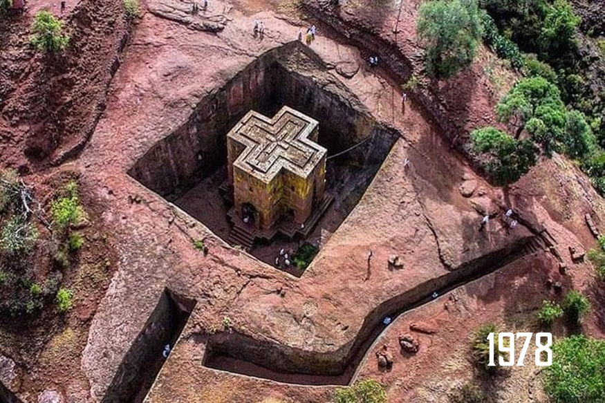

Pyramids of Giza
The Pyramids of Giza, including the Great Pyramid of Khufu, are
ancient royal tombs that have stood for over 4,500 years. They
reflect the engineering prowess and spiritual beliefs of ancient
Egyptian civilization.
The Great Pyramid was the tallest man-made structure in the world
for over 3,800 years.
Rock-Hewn Churches of Lalibela

Amhara Region, Ethiopia
Carved directly into solid rock in the 12th century, the churches
of Lalibela are considered a New Jerusalem for Ethiopian Orthodox
Christians. The complex showcases a remarkable fusion of religious
devotion and architectural ingenuity.
There are 11 churches carved entirely from single pieces of stone,
connected by tunnels and trenches.
Timbuktu
Timbuktu was a center of Islamic scholarship and trade during the
15th and 16th centuries, known for its ancient manuscripts and
mud-brick mosques. It symbolizes Africa’s rich intellectual and
cultural heritage.
Timbuktu’s libraries house hundreds of thousands of ancient
manuscripts, some dating back to the 13th century.
Serengeti National Park

Northern Tanzania
The Serengeti is one of the most iconic wildlife ecosystems in the
world, famed for its vast savannas and annual wildebeest
migration. It is home to the Big Five and numerous other species
in a largely untouched environment.
Over 1.5 million wildebeest migrate through the Serengeti every year
in one of the largest animal movements on Earth.
Island of Gorée
Gorée Island was a key center of the Atlantic slave trade, where
enslaved Africans were held before being shipped across the ocean.
Its preserved colonial buildings serve as a stark memorial to a
painful history.
The House of Slaves on Gorée Island includes the infamous “Door of
No Return,” symbolizing the point of departure for countless
captives.